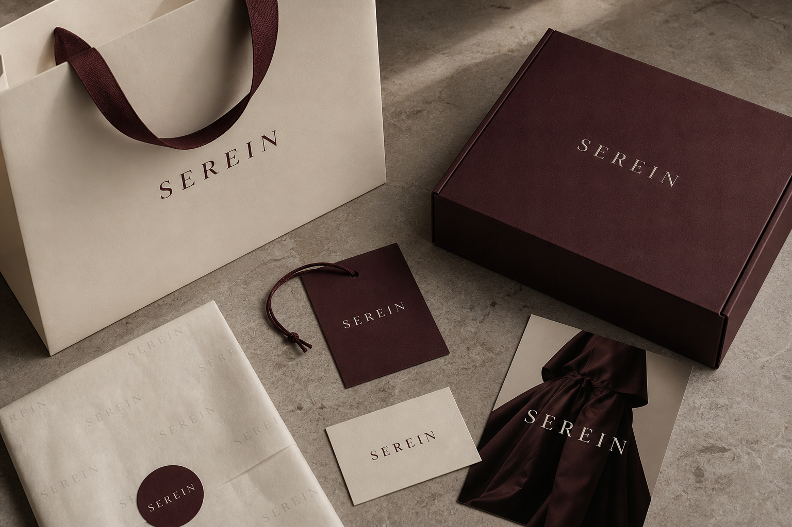

Professional résumé / Dubai, UAE
Rameez
Pallikkalakam
QA/QC & Technical
Documentation Specialist
Material Submittals | Compliance | Interior Fit-Out | Graphic Design | Videography | Photography
QA/QC, Technical Documentation & Design Specialist with 6+ years of experience across technical documentation, interior and furniture design, production coordination, QA/QC support, graphic design, videography, photography, and multimedia content creation.
 Interior visualization · Portfolio visual
Interior visualization · Portfolio visual
What I Do
QA/QC & Technical
Interior & Furniture
Design
3D Visualization &
Space Planning
Graphic Design &
Branding
Videography &
Photography
WORK EXPERIENCE
 01
01
Jun 2024 – Present
QA/QC, Technical Documentation & Design Specialist — Ikan Inc., Dubai, UAE
View details →
02Feb 2023 – Jun 2024
Graphic Designer — Cuple ST LLC, Dubai, UAE
View details → 03
03
Dec 2019 – Aug 2022
Graphic Designer & Space Planner — FurEuro Furniture, Dubai, UAE
View details →About Me
PROFESSIONAL SUMMARY
QA/QC, Technical Documentation & Design Specialist with 6+ years of experience across technical documentation, interior and furniture design, production coordination, QA/QC support, graphic design, videography, photography, and multimedia content creation. Experienced in reviewing drawings, Technical Data Sheets (TDS), test reports, project specifications, and compliance requirements; preparing material submittals, compliance statements, LEED, sustainability, and Estidama documentation; and addressing client and consultant comments. Skilled in supporting production quality control, coordinating technical requirements, and ensuring documentation accuracy and specification compliance. Diploma in Civil Engineering with strong proficiency in AutoCAD, Revit, SketchUp, Adobe Photoshop, Illustrator, and 3D visualization tools.
Rameez RAMEEZ PALLIKKALAKAMSkills & Tools
Architecture & 3D
ACAutoCADRVRevit ArchitectureSKSketchUpVRV-RayLULumionENEnscape
Design · Video · Documentation
PSAdobe PhotoshopAIAdobe IllustratorXDAdobe XDCACanvaPRAdobe Premiere ProCCCapCutAAAdobe AcrobatMSMicrosoft Office
CORE SKILLS
QA/QC & COMPLIANCE: TDS and test report review, technical specification review, specification compliance, product compliance evaluation, consultant comment resolution, quality documentation, inspection and test documentation, mock-up coordination, site technical support
TECHNICAL DOCUMENTATION: Material submittal preparation and tracking, compliance statements, compatibility letters, method statements, warranties, declarations, technical correspondence, site technical reports, LEED, Estidama, sustainability documentation, technical records, document control
TECHNICAL & PROJECT COORDINATION: Product selection support, material approval / MAR support, prequalification documentation, vendor registration, client/consultant coordination, supplier coordination, sales and production coordination, project approval documentation
DESIGN & MULTIMEDIA: Graphic design, photography, videography, video editing, social media content, technical presentations, brochures, exhibition/stand visuals, 3D modelling, space planning, branding and marketing materials
SOFTWARE: AutoCAD | Revit Architecture | SketchUp | V-Ray | Lumion | Enscape | Adobe Acrobat | Adobe Photoshop Adobe Illustrator | Adobe XD | Adobe Premiere Pro | CapCut | Canva | Microsoft Office
Complete Work Experience
01QA/QC, Technical Documentation & Design Specialist — Ikan Inc., Dubai, UAE
+
QA/QC, Technical Documentation & Design Specialist — Ikan Inc., Dubai, UAE
- Review Technical Data Sheets (TDS), test reports, certificates, project specifications, and other technical documents to verify product compliance with project and consultant requirements.
- Manage technical submittals and product approval documentation for construction projects across the UAE and KSA, including tile adhesives, grouts, sealants, waterproofing systems, stone-care products, and related construction materials.
- Prepare and revise material submittals, compliance statements, compatibility letters, method statements, warranty documents, declarations, and other required technical submissions.
- Review consultant comments, identify compliance gaps, prepare consultant response sheets, coordinate supporting evidence, and submit revised documentation for approval.
- Coordinate required Technical Data Sheets (TDS), test reports, certificates, compliance evidence, and other supporting documentation in response to consultant and project requirements.
- Evaluate applicable standards and classifications, including EN, ISO, ANSI, ASTM, VOC, LEED, Estidama, and other project-specific performance and sustainability requirements.
- Maintain technical records, including product data, test reports, certificates, approvals, warranties, maintenance manuals, project references, and other technical documentation.
- Coordinate project-specific technical requirements with consultants, contractors, subcontractors, suppliers, laboratories, sales, technical, production, and management teams to obtain required information and resolve technical documentation requirements.
- Support site and quality activities, including mock-ups, product application reviews, stain tests, pull-off testing, troubleshooting, product evaluation, and preparation of technical reports.
- Support product selection, prequalification, vendor registration, quotations, material approvals, project approvals, client correspondence, and other sales and technical requirements.
- Provide multimedia and visual-design support, including graphic design, photography, videography, video editing, brochures, social-media content, technical presentations, exhibition/stand visuals, 3D modelling, and space planning using AutoCAD and SketchUp.
02Graphic Designer — Cuple ST LLC, Dubai, UAE
+
Graphic Designer — Cuple ST LLC, Dubai, UAE
- Managed social media content and created engaging visual assets for a women’s fashion brand, aligning designs with seasonal trends and marketing campaigns.
- Designed in-store displays, coordinated product photoshoots, and produced promotional videos and digital content for social media campaigns.
- Developed brand identities, packaging designs, advertisements, and marketing materials while maintaining consistency across print and digital platforms.
- Collaborated with internal teams and external vendors to execute creative projects, maintain brand guidelines, and ensure high-quality visual communication.
03Graphic Designer & Space Planner — FurEuro Furniture, Dubai, UAE
+
Graphic Designer & Space Planner — FurEuro Furniture, Dubai, UAE
- Produced accurate 2D CAD drawings for wooden, steel, and aluminum works, including custom wardrobes, doors, furniture, and other carpentry elements.
- Prepared detailed shop drawings, space plans, and architectural layouts in line with project requirements and client specifications.
- Developed design concepts, presentations, and marketing materials that balanced aesthetics, functionality, and brand identity.
- Coordinated with sourcing, production, and vendor teams throughout the product lifecycle, supporting material selection, feasibility, quality control, and final delivery.
- Designed high-quality custom furniture and furnishing solutions for interior and exterior spaces, with a focus on luxury, innovation, efficient space utilization, and functionality.
- Conducted drawing, material, production, and quality reviews for custom furniture and joinery works, coordinating revisions with production teams and vendors before final delivery.
EDUCATION
Diploma in Civil Engineering: Northeast Frontier Technical University, 2017
Higher Secondary, Computer Science: Rahmaniya Higher Secondary School, 2012
SSLC: St. Joseph's Boys' Higher Secondary School, 2010
QA/QC CAPABILITIES
Drawing & Document Review: checking technical accuracy, completeness, and alignment with client requirements.
Technical Submissions: preparing compliance, compatibility, LEED, Estidama, and sustainability documentation.
Production Quality Control: supporting feasibility and quality oversight for custom furniture and furnishings.
Shop Drawings & Plans: preparing 2D CAD, shop drawings, and plans for wood, steel, and aluminum works.
Technical Records: retrieving and reviewing test reports, manuals, and related documentation.
Coordination: responding to client feedback and liaising with sales, design, sourcing, and vendor teams.
Let's Work Together
LANGUAGES - English, Hindi, Tamil, Malayalam (Fluent)
- ✉rameezpallikkalakam@gmail.com
- ☎MOB : +971 50 283 4397
- ⌖Dubai, UAE
- DLDriving License: UAE, Automatic
- ↗Professional Portfolio: View project gallery
- inLinkedIn: linkedin.com/in/rameez-pallikkalakam-6ba09a115
- •DOB: 24-06-1993